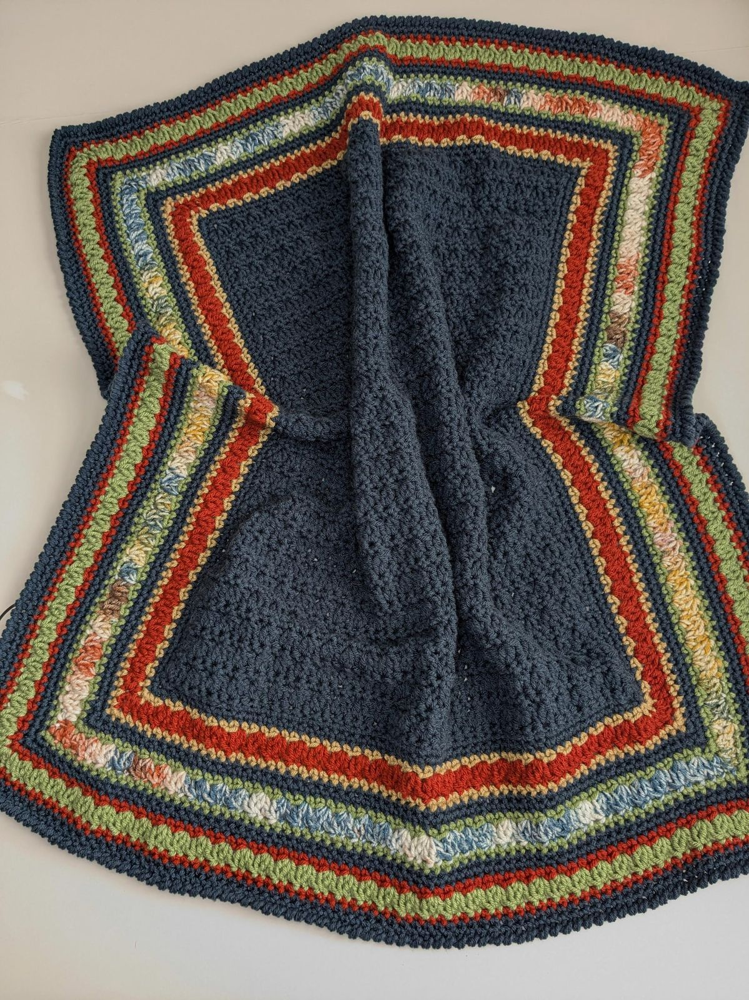

PROJECT THUMBNAIL
Проєкт: Дитячий пледик
СЕРЕДНЯ
В ПРОЦЕСІ
ОСНОВНІ СТІБКИ
- Стовпчик без накиду (СБН)
- Повітряна петля (ПП)
ІНСТРУМЕНТИ Й МАТЕРІАЛИ
- Пряжа: Merino Soft (Grey)
- Гачок: 4.5 mm
- Метраж: 200 m (Total)
HACHOK METRIC V1.0
ПОТОЧНИЙ СТАН
14/45
120.00m used
ІНСТРУКЦІЯ ТА АКТИВНИЙ РЯДОК
СЕКЦІЯ 1
31% ВИКОНАНО
РЯДОК 14 з 45
"Рядок 14: 1 ПВ для підйому, 30 СБН за задню стінку петлі, поверніть роботу."
DIAGRAM PLACEHOLDER / VISUAL AID
Графічна схема 14-го рядка для комфортного в'язання
Плейлист під процес в'язання
LIVE НИТКОВИМІРЮВАЧ ТА НОТАТКИ
СЕНСОР: АКТИВНИЙLIVE ЗЧИТУВАННЯ МЕТРАЖУ
00.00 m
OFFSET: +0.02m | DRIFT: 0.00
Залишок у мотку: 80 м
Вам вистачає